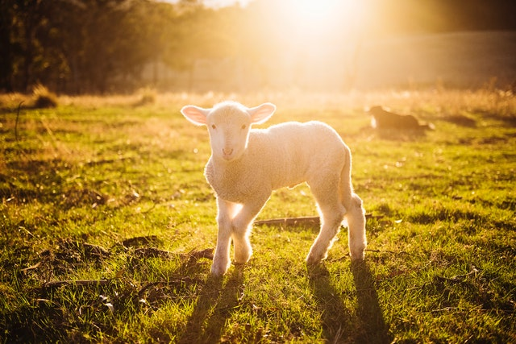
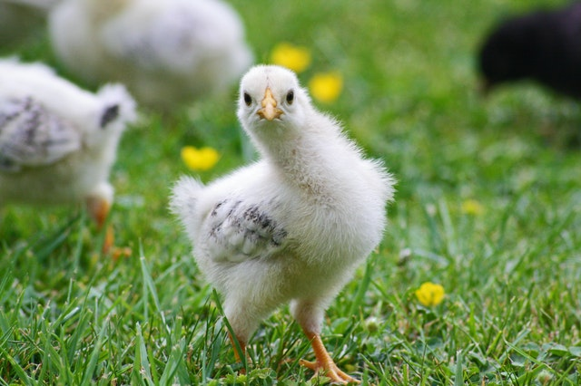
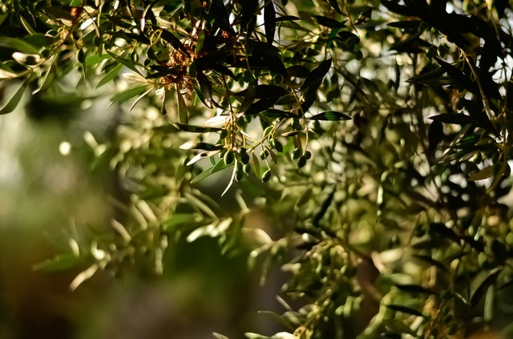
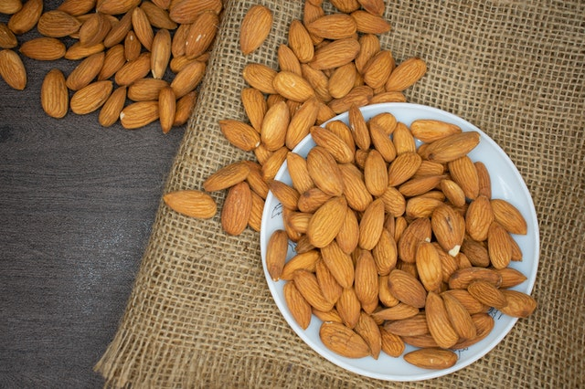

Mezőgazdaság
- A Pó-alföld a legjelentősebb mezőgazdasági terület: búza, kukorica, cukorrépa, rizs termesztése folyik. Gabonatermesztésében számottevőbb a tészta készítésére alkalmas kemény (durum-) búza. Emellett gyümölcsösök teszik változatossá az egyhangú tájat, gyakran elegyítik fás kultúrákkal a szántóföldeket (jellegzetes olasz kevert kultúra).
- A déli területeken jellemző a citrusfélék (narancs, citrom), a korai zöldségfélék, az olajfa termesztése, nevelése. A paradicsom termesztésében kiemelkedik.
- Az állattenyésztés szerepe nem jelentős. A szarvasmarhát és sertést inkább északon, juhot és kecskét inkább délen tenyésztik, szárnyasokat az egész országban. Az állattenyésztés ágazatában kiemelkedő a tejelő szarvasmarha tenyésztése.  
Szőlő termesztésében első a világon, olívaolaj-előállításában 2. a világon, de a nagy belső fogyasztás miatt rossz termés esetén ebből importra is szorul. Az ország mandulatermése adja a világ termésének közel 1/3-át.
 A mezőgazdasági termelés különbségei
A birtokviszonyok, a domborzati viszonyok és az éghajlat eltérései nagy különbségeket hoztak létre az olasz mezőgazdaságban is. A Pó-alföld egyenletesebb csapadékeloszlása azt eredményezi, hogy a terület nyáron is kap csapadékot, és a környező hegységekből eredő folyók is biztosítanak vizet az öntözéshez. Itt fejlett, belterjes mezőgazdaság működik. A mediterrán délvidéken a domborzati viszonyok (azaz a hegyek, dombságok), a talajpusztulás, az éghajlat (a nyári szárazság, gyakori aszályok) és a vízhiány is nehezítette a mezőgazdaság fejlődését. A Cassa per il Mezzogiornohoz (1950-es évek) kapcsolódó földreformok következtében kevesebb a nagybirtok, és helyükön megjelentek a kisparaszti gazdaságok, amelyek azonban csak kis jövedelmet biztosítanak a termelőknek.
Mezőgazdasági termények
A Pó-alföld gazdaságai sok élőmunka és korszerű technika alkalmazásával, kihasználva a nedvesebb éghajlatot és az öntözési lehetőségeket, rizst, búzát, kukoricát és cukorrépát termesztenek, és a tejelő szarvasmarha-tenyésztés is jelen van. Délen az öntözhető földeken citrusféléket, zöldséget, szőlőt termesztenek. A rossz éghajlati adottságok miatt az olajfa és a gabona hozama alacsony. A hegyvidékek a rossz termőtalaj miatt csak juh- és kecskepásztorkodásra alkalmasak. A déli mezőgazdaság számára az is problémát jelent, a termékszerkezete (citrusfélék, kertészeti termékek) nem, vagy csak részben felel meg a piaci igényeknek, emiatt az Olaszországra jutó európai uniós mezőgazdasági támogatások nagyobb része északra, az állattenyésztő és gabonatermesztő területekre jut.